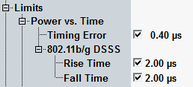

Standard IEEE 802.11ax defines requirements for OFDM PHY and HE PHY in sections 17.3.9.10 and 28.3.14.3 "Pre-correction accuracy requirements". After the AP triggers the uplink transmissions, the STA transmits the HE TB PPDU at a specified time. The accuracy of this time must be ±0.4 μs relative to the frame sent by the AP to trigger the UL transmissions.
The calculation of timing error requires suitable trigger to be specified as a trigger source. Internal IF power trigger cannot be used. |
The rise time and fall time represent a basic pulse shaping criterion for DSSS signals.
Standard IEEE 802.11-2012 defines related requirements in sections 16.4.7.8 and 17.4.7.7 "Transmit power-on and power-down ramp". The transmit power-on ramp (rise time) for 10% to 90% of maximum power must be no greater than 2 μs. The transmit power-down ramp (fall time) for 90% to 10% of maximum power must also be no greater than 2 μs.
All limits can be set in the configuration dialog.

As an alternative to the maximum power, it is also possible to select the average power as the reference level, see "Reference Power".
The pulse shape of DSSS signals is complemented by their spectrum mask, see "Transmit Spectrum Mask DSSS" for details.